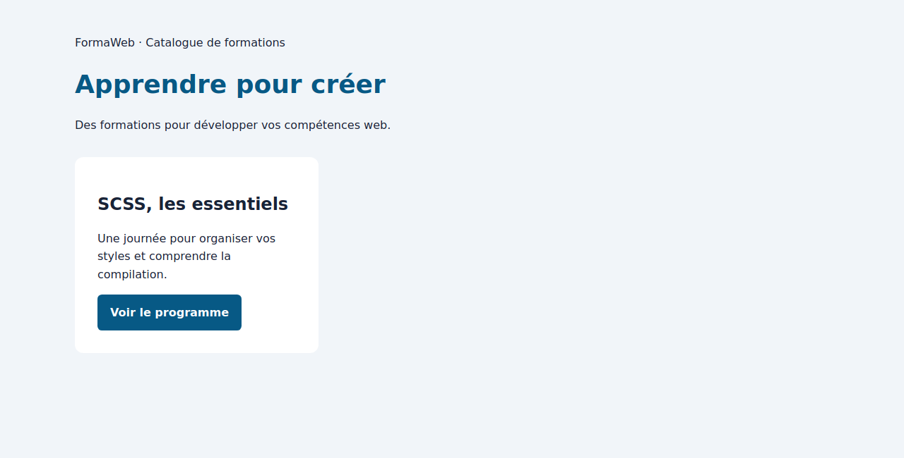
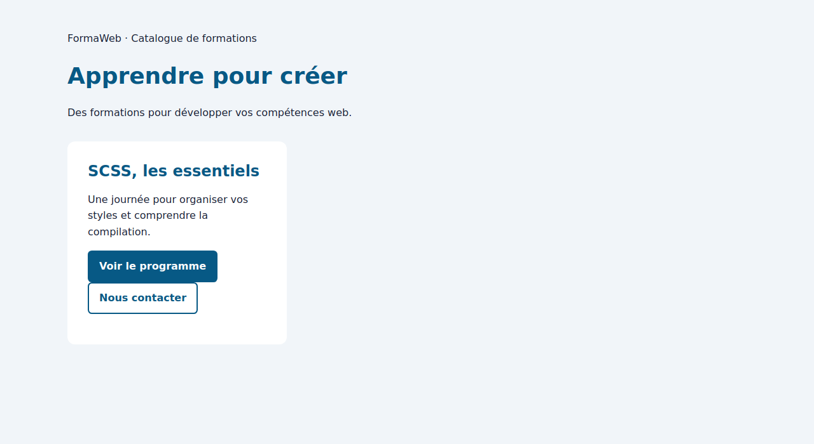
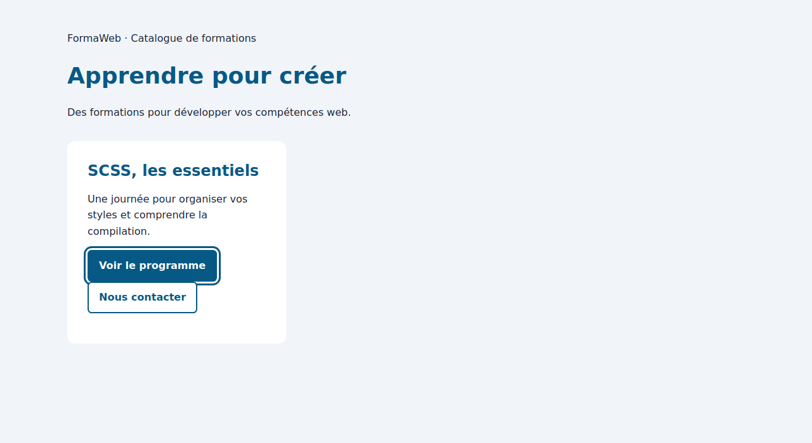
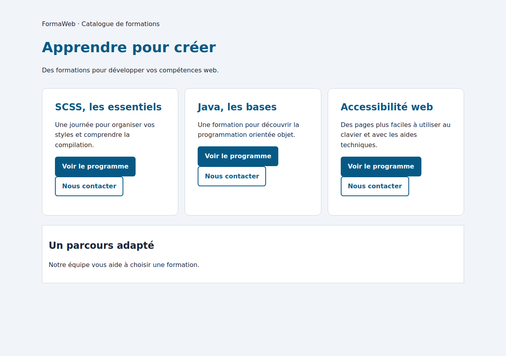
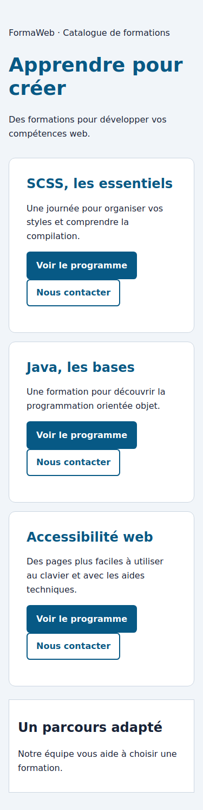

4 TP indépendants sur le même catalogue FormaWeb. Le HTML et les styles de mise en page sont fournis. Les durées de pratique sont suivies d’une correction guidée de 10 minutes.
Préparer avant la séance : Node.js LTS et npm, VS Code et un navigateur récent. Les commandes ont été vérifiées avec Node.js 24.22.1, npm 11.9.0 et Sass 1.107.0. Une autre version LTS compatible peut convenir. Aucun JavaScript à écrire.
Installer Node.js depuis nodejs.org. Vérifier les instructions de l’organisme si le poste est administré. La première installation des paquets nécessite un accès à registry.npmjs.org. Aucun compte npm n’est nécessaire pour les paquets publics utilisés.
node -v
npm -vExtraire tout le ZIP avant de travailler. Ouvrir le dossier du TP dans VS Code, puis Terminal > Nouveau terminal. Vérifier le chemin dans l’invite. Sous Windows, si PowerShell bloque npm.ps1, choisir le profil « Invite de commandes » et ouvrir un nouveau terminal.
Pour les TP 2 à 4, ouvrir index.html dans le navigateur après compilation. L’affichage ne demande aucun serveur. Enregistrer les changements dans VS Code, regarder le terminal, puis actualiser la page. Le mode watch recompile le CSS mais n’actualise pas le navigateur.
30 minutes + 10 minutes de correction. Objectif : installer un outil local et expliquer les fichiers créés. Dossier : tp1/. Aucun SCSS à écrire.
npm init -y. Ouvrir package.json, donner le nom formaweb-scss au projet et ajouter "private": true. Garder un JSON valide.1.107.0 comme outil de développement. Enregistrer une version exacte, sans ^."version:sass": "sass --version". Conserver les autres propriétés si elles existent.npm run version:sass puis npm ls --depth=0. Relever la version de Sass.npm ci : constater que le projet reste utilisable et que les JSON ne changent pas. Indiquer quels fichiers partager pour réinstaller le projet.La commande d’ajout commence par npm install -D. La version suit le nom du paquet avec @. L’option --save-exact enregistre une version exacte. Un script se place dans l’objet scripts et se lance avec npm run suivi de son nom.
À remettre : package.json, package-lock.json et releve-versions.txt. Ne pas remettre node_modules. Aucun rendu graphique attendu pour ce TP.
30 minutes + 10 minutes de correction. Objectif : modifier des choix communs avec des variables Sass. Dossier : tp2/.
npm ci
npm run devLe fichier src/_base.scss est fourni et déjà chargé par @use "base";. Garder cette première ligne : son fonctionnement sera étudié dans le chapitre sur les modules. Modifier uniquement la suite de src/style.scss. Le lien HTML vise déjà css/style.css.
| Variable | Valeur | Usage |
|---|---|---|
| $accent | #075985 | Titre principal et fond du lien bouton |
| $texte | #172337 | Texte de la carte |
| $espace | 1rem | Base des espacements |
| $rayon | 0.75rem | Arrondi de la carte |
Vue à 1280px, racine de police à 16px. La grille de base réserve une colonne de son catalogue à cette carte.

Indice : une variable commence par $, sa déclaration se termine par ;, et la multiplication s’écrit $espace * 2.
30 minutes + 10 minutes de correction. Dossier : tp3/. Les variables et le résultat du TP 2 sont déjà fournis. Exécuter npm ci puis npm run dev.
0 0 $espace. Cela signifie haut 0, côtés 0, bas $espace.0 0 $espace. Ces règles concernent les descendants de .carte.&:hover pour utiliser $accent-survol comme fond.&:focus-visible avec un outline de 3px solid $accent et un outline-offset de 3px.&.secondaire : fond blanc, texte $accent, border-color: $accent. La bordure de 2px et le style solid sont déjà fournis dans la base.
Le contour visible ci-dessous indique le lien qui recevra l’action de la touche Entrée.

Indice : & représente le sélecteur du bloc extérieur, pas un élément enfant.
35 minutes + 10 minutes de correction. Dossier : tp4/. La carte terminée est fournie sous forme d’un fichier à réorganiser. Le HTML contient trois cartes et un encart.
style.scss charge déjà base puis carte. _base.scss contient les styles généraux et la grille responsive. _carte.scss contient les variables et les styles des composants. _tokens.scss et _outils.scss sont à compléter.
tokens.$accent.@mixin surface($rayon: tokens.$rayon) avec background: white, border: 1px solid #cbd5e1 et border-radius: $rayon.@include outils.surface();. Conserver couleur, padding et règles imbriquées.@include outils.surface(0); pour une surface aux coins droits. Utiliser tokens.$espace pour son padding.Grand écran : trois colonnes.

Petit écran : les cartes se suivent verticalement. Une partie du contenu nécessite de faire défiler la page.

Indice : la déclaration @mixin ne crée pas de règle CSS. C’est @include, dans une règle de composant, qui insère ses propriétés.
Dans Chrome ou Edge : F12, puis Ctrl+Maj+M pour la barre d’appareils. Choisir le mode Responsive et saisir 375 ou 1280 dans la largeur. Revenir au zoom 100 %. Pour contrôler le focus, fermer les outils si nécessaire puis appuyer sur Tab dans la page. Une simple réduction de la fenêtre reste possible.
| Terme | Sens |
|---|---|
| Paquet | Fichiers réutilisables distribués avec leurs informations. |
| Dépendance | Paquet utilisé par le projet, directement ou indirectement. |
| Terminal | Fenêtre qui exécute des commandes textuelles. |
| Racine du projet | Dossier principal qui contient package.json. |
| Source / sortie | Fichier que l’on modifie / fichier que l’outil produit. |
| Compilation | Transformation du SCSS en CSS. |
| Variable | Nom associé à une valeur au moment de compiler. |
| Sélecteur | Expression qui désigne les éléments HTML à styler. |
| Pseudo-classe | Condition ou état CSS, par exemple :hover. |
| Module Sass | Fichier chargé par @use. |
| Espace de noms | Préfixe qui indique le module, par exemple tokens. |
| Mixin / paramètre | Groupe de règles réutilisable / valeur reçue lors d’un appel. |
| Media query | Condition, par exemple une largeur minimale, qui active des règles CSS. |